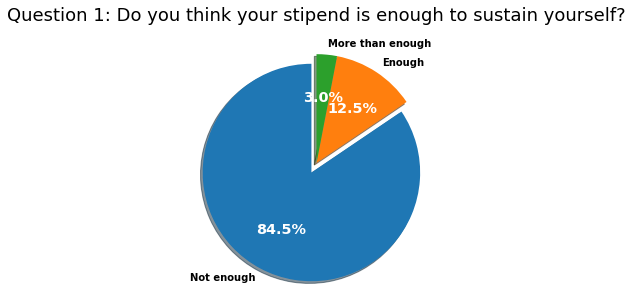
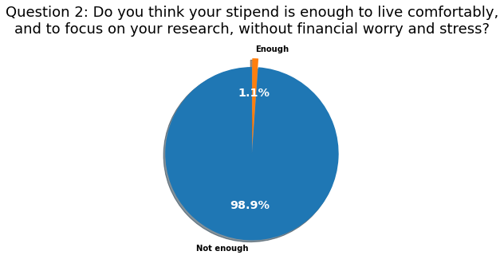
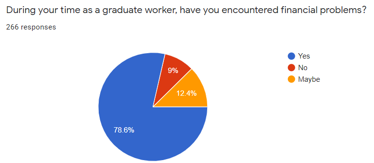
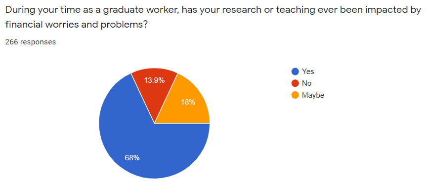
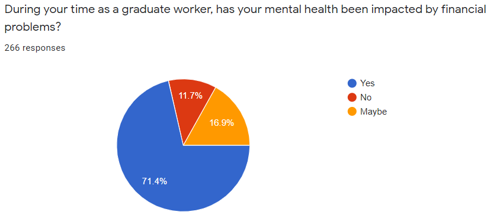
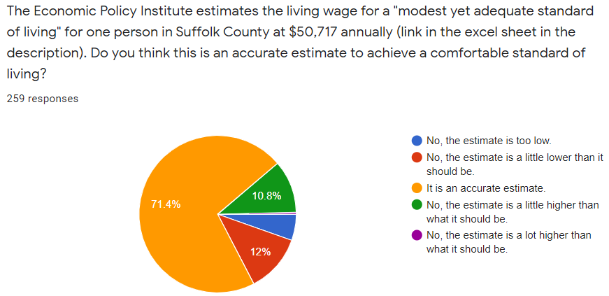
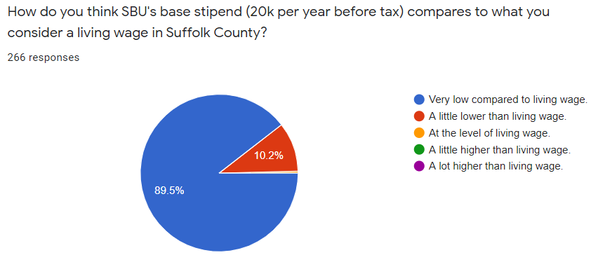

Statement From SBU GSEU on Graduate Student Wages
What is it like to try to live on a graduate student stipend at Stony Brook University? This is what we tried to find out in our recent survey on SBU grad student finances, which so far has received 266 responses. We already knew that out of 63 AAU universities, Stony Brook ranks 6th from the bottom in terms of the ratio of our net stipend to the local cost of living. Our findings indicate that the majority of our graduate students are struggling with poverty or extreme financial hardship. In our survey, 85% of the graduate worker respondents said they cannot sustain themselves with their stipends, and 99% said they cannot "live comfortably, and... focus on [their] research, without financial worry and stress." Many of us are struggling to make it to the next paycheck and suffering from the anxiety that comes with living below the poverty line. Our graduate workers shared that they cannot visit family members, start their own families, leave abusive and unsafe living conditions, afford a healthy diet, or pay for basic car maintenance because they are not paid a living wage. We are basing our campaign on a living wage of $47,175, which was determined by the weighted average of the answers graduate workers gave when asked what they think constitutes a living wage for Suffolk County. To read GSEU's statement on our survey at length, click here. The rest of this page includes the most significant findings from our survey.
Grad workers struggle on current stipends
We asked graduate students if their current stipend was enough to sustain themselves, and more than half responded that it was not enough at all. While the proportion of respondents who stated that their stipend is not enough to sustain themselves at all differs somewhat by department (since base stipends differ between departments), the majority at least feel that their stipend is lower than it should be. When asked if the stipend is enough to live comfortably and without worry, the overwhelming majority stated that it was not enough.
 {kind=link}
{kind=link}
It comes as no surprise, then, that when we asked if graduate workers had ever encountered financial problems or had their research, teaching, or mental health impacted by financial worries, a majority responded yes. Specifically, survey respondents mentioned high rent, poor mental health, reduced research productivity, having to take other jobs, inability to afford food, contributing nothing to savings, medical and dental expenses, and inability to get cars or other necessary equipment repaired as some of the struggles they faced as a result of low wages.
  {kind=link}
{kind=link}
{kind=link}
Here are a few of the responses to the question "What are some issues, if any, that you experience due to the level of our base stipend? Please share with us financial, mental health related issues, or any other."
University's dorms are too expensive to rent, so I have to find other places. However, these places are still too expensive compared with the net pay, about 60% per month, which is totally not acceptable. Also, when living off-campus, I have to afford a car and car insurance that also occupies a large portion of the salary.
During the past 5 years of working and studying at SBU, I always had to work a side job to be able to afford rent and groceries. It took a lot of time and energy away from my research.
How a living wage would impact grad workers' lives
We have already established that low stipends negatively impact grad workers' quality of life by plaguing them with financial worries that hurt their research and teaching performance as well as their mental health. In our survey, we also asked grad workers how a living wage would change their lives. They mentioned having more time to focus on research, improved mental health, not having to take other jobs, ability to purchase needed equipment, attending more conferences, and dedicating more money to research projects as specific improvements that would result from earning a living wage.
Here are a few of the responses graduate students gave when asked what effect a higher stipend would have on their life, mental health, and research.
If I had a higher stipend, I would be able to quit a few of my jobs and focus more wholly on my academics.
I wake up with nightmares related to financial stress several times a week. So, I'd at least sleep a bit sounder. I wouldn't have moments of panic when my bank account hits $0, or overdraws.
Be able to focus on my research/teaching instead of trying to figure out how to sustain myself or trying to figure out who to borrow money and feel extremely shameful. I can't even have other jobs because of my visa status (F-1)
My research productivity, motivation and quality would improve by leaps and bounds if I had a better quality of life and didn't have to worry about money.
What is a living wage, and how can you help achieve it?
{kind=link}
The Economic Policy Institute (EPI) states that a living wage in Suffolk County is $50,717 per year. According to our survey results, the majority of graduate students agree that this wage would be enough to live comfortably. We also asked them how Stony Brook's current stipends compare to a living wage. The vast majority responded that Stony Brook's base stipend is very low compared to a living wage.
{kind=link}
Finally, we asked graduate students what they thought a living wage was. The weighted average of all the answers we got was an annual amount of $47,157. This is what graduate workers collectively believe a living wage is and the figure that we will be basing our campaign on. We call on the Stony Brook administration to come to an agreement on a living wage with the GSEU.
We are still seeking survey responses from grad workers. If you are a grad worker at Stony Brook, please fill out the survey here.
To support our living wage campaign, please sign the petition by clicking the button below.